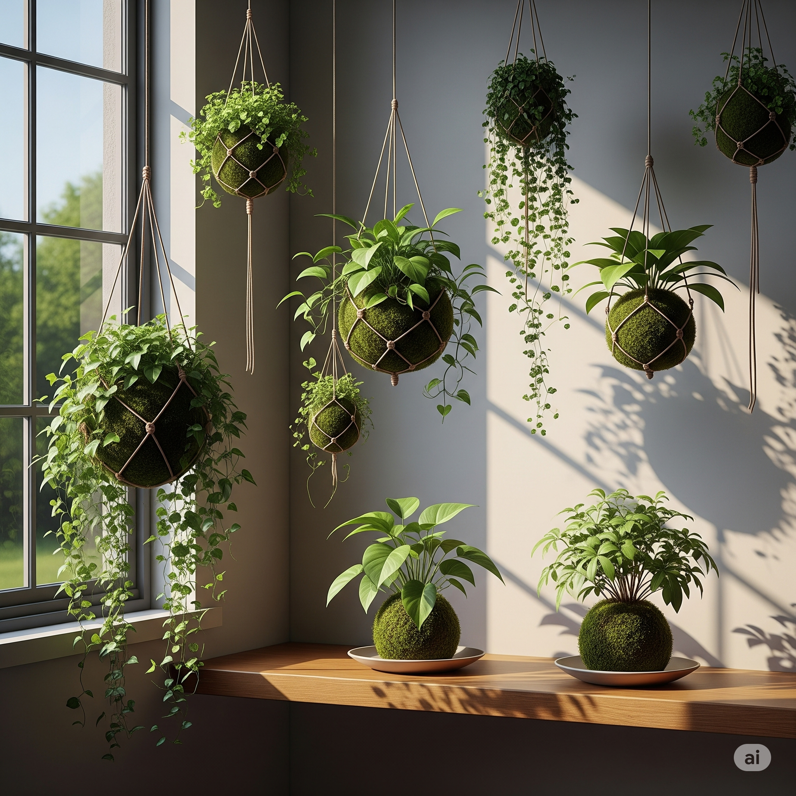

Kokedamas: Jardins Esculpidos em Musgo

As kokedamas são a arte de cultivar plantas sem vaso, criando uma pequena escultura viva envolta por musgo. Originadas no Japão, elas são conhecidas como “bolas de musgo” e unem beleza minimalista com uma conexão intensa com a natureza.
Montar uma kokedama é quase um ritual: molda-se uma esfera com substrato especial, envolve-se com musgo e amarra-se tudo com fio natural. O resultado é uma peça viva que pode ser pendurada, apoiada em prateleiras ou disposta diretamente sobre a mesa.
Para quem vive com gatos, as kokedamas oferecem vantagens interessantes: sem vaso de cerâmica ou plástico para derrubar, com visual leve e fácil de posicionar fora do alcance felino. No entanto, atenção à escolha da planta e à altura de instalação, principalmente se seu gato for um alpinista curioso.
As espécies mais indicadas para kokedamas incluem samambaias, jiboias, marantas, peperômias e antúrios. O importante é que a planta tolere umidade frequente, já que a rega ideal é feita por imersão, mergulhando a bola em água por alguns minutos até encharcar bem o substrato.
Se você deseja começar sua jornada no mundo das kokedamas, seja por estética, praticidade ou puro encantamento, há vários livros que podem ajudar. Desde guias básicos até abordagens mais avançadas, aprender com quem entende faz toda diferença.
📚 Aprenda mais com livros sobre kokedamas
Selecionamos títulos que explicam passo a passo como criar, cuidar e decorar com kokedamas.
Kokedama: Guia Completo Kokedama Sem Mistério Caring for Your Kokedama